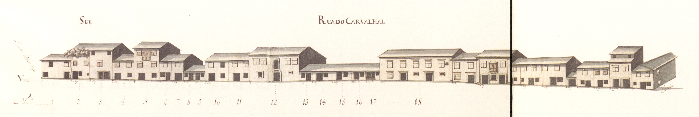

Número da rua: 44 Nome da rua: Rua da Fonte da Carcova
A sua fundação, remontará talvez aos inícios do Santa Ana
e da Vinha.
No seu extremo Este existia, desde a Idade Média, uma fonte, conhecida pela Fonte da
Cárcova ou Cárcoda.
Embora a sua ocupação se tenha iniciado de imediato (p.ex. o prazo do Cabido
mais antigo nesta rua data de
Em rua dos Mercadores: o rés-do-chão era totalmente ocupado com largas portas de madeira
que durante o dia se abriam para afzer o comércio.
De resto é predominantemente ocupada com prédios de 3 andares, e janelas bracarenses, e poucas varandas
e gelosias. Diferentes são apenas os prazos 5, 6 e sobretudo o 7, onde se vê uma construção setecentista
já de certa dimensão, com duas varandas, «molduras» de pedra nas aberturas e, sobretudo, um dos vãos
extremos da casa tem mais um piso, reminiscência talvez de opções estilísticas mais arcaicas.
Das 27 casas aqui desenhadas e que correspondem apenas ao lado Norte da rua, 10 eram prazos do
Cabido.
Desde rua dos Capelistas.
Aberta em data desconhecida. No Tombo do Cabido (cª
Estabelecida a ligação entre o largo dos Penedos e os espaços onde bastante
mais tarde, nos meados do convento do Carmo.
Em
Das 27 casas aqui desenhadas e que correspondem apenas ao lado Sul da rua, 18 eram prazos
do Cabido.
Mantém o nome de rua do Carvalhal.
Rua da Fonte da Carcova- Norte.Rua da Fonte da Carcova- Sul
Casa número: 1
enfiteuta: Os herdeiros de Gregório João, tratantem casado com Maria Veloso foro: 25 reis e 1 galinha
Mantém o nome de rua do Carvalhal.
Casa número: 2
enfiteuta: António Francisco foro: 30 reis e 1 galinha
Mantém o nome de 1608 e 1690.rua do Carvalhal.
Casa número: 3
enfiteuta: António Francisco foro: 20 reis e 2 galinhas
Mantém o nome de 1608 e 1690.rua do Carvalhal.
Casa número: 4
enfiteuta: António Francisco foro: 50 reis
Mantém o nome de 1608 e 1690.rua do Carvalhal.
Casa número: 5 e 6
enfiteuta: Sebastião Luís de Faria foro: 50 reis e 1 galinha
Mantém o nome de 1541.rua do Carvalhal.
Casa número: 7
enfiteuta: Sebastião Luís de Faria foro: 30 reis e 1 galinha
Mantém o nome de 1541.rua do Carvalhal.
Casa número: 8
enfiteuta: Ana Maria de Carvalho foro: 20 reis e 1 galinha
Mantém o nome de 1531 e 1625.rua do Carvalhal.
Casa número: 9
enfiteuta: João Martins Teixeira, mercador, casado com Ana Maria da Silva foro: 10 reis e 1 galinha
Casa número: 10
enfiteuta: Manuel Marques Pereira foro: 10 reis e 1 galinha
Mantém o nome de 1531 e 1617.rua do Carvalhal.
Casa número: 1
Mantém o nome de rua do Carvalhal.
Casa número: 2
enfiteuta: D.Mónica Isabel de Brito e Távora, de Vila do Conde, assistente em Lisboa.
Mantém o nome de rua do Carvalhal.
Casa número: 3
enfiteuta: D.Mónica Isabel de Brito e Távora, de Vila do Conde, assistente em Lisboa.
Mantém o nome de rua do Carvalhal.
Casa número: 4
enfiteuta: D.Mónica Isabel de Brito e Távora, de Vila do Conde, assistente em Lisboa.
Mantém o nome de rua do Carvalhal.
Casa número: 5
enfiteuta: D.Mónica Isabel de Brito e Távora, de Vila do Conde, assistente em Lisboa.
Mantém o nome de rua do Carvalhal.
Casa número: 6 a 9
enfiteuta: D.Mónica Isabel de Brito e Távora, de Vila do Conde, assistente em Lisboa.
Mantém o nome de rua do Carvalhal.
Casa número: 10
enfiteuta: Os herdeiros de Francisco João, sapateiro, casado com Ana Dias. foro: 588 reis e 1 galinha
Casa número: 11
enfiteuta: D.Mónica Isabel de Brito e Távora, de Vila do Conde, assistente em Lisboa.
Mantém o nome de rua do Carvalhal.
Casa número: 12
enfiteuta: D.Mónica Isabel de Brito e Távora, de Vila do Conde, assistente em Lisboa.
Mantém o nome de rua do Carvalhal.
Casa número: 13 e 14
enfiteuta: D.Mónica Isabel de Brito e Távora, de Vila do Conde, assistente em Lisboa.
Mantém o nome de rua do Carvalhal.
Casa número: 15 e 17
enfiteuta: D.Mónica Isabel de Brito e Távora, de Vila do Conde, assistente em Lisboa.
Mantém o nome de rua do Carvalhal.
Casa número: 16
enfiteuta: D.Mónica Isabel de Brito e Távora, de Vila do Conde, assistente em Lisboa.
Mantém o nome de rua do Carvalhal.
Casa número: 18
enfiteuta: D.Mónica Isabel de Brito e Távora, de Vila do Conde, assistente em Lisboa. foro: 800 reis, 3 galinhas e 1 capão